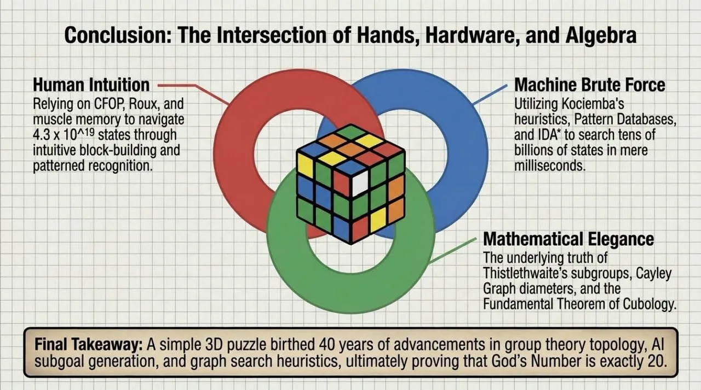

기둥 3 · 기울기를 재는 법 · 08장
편미분 — 한 방향으로만 재는 기울기
언덕을 동쪽으로만, 북쪽으로만 걸어 보기
언덕을 동쪽으로만, 북쪽으로만 걸어 보기
핵심 질문 — 언덕 위의 한 점에서, 「동쪽으로 걸을 때」와 「북쪽으로 걸을 때」 기울기는 어떻게 따로 잴까?
기둥 3에서는 「기울기」를 재요. 먼저 곡선 하나의 기울기(미분)를 복습하고, 언덕(곡면)에서는 한 방향만 걷고 나머지는 멈춘 채 재는 편미분을 배워요. 원자료 ①의 모든 식에 나오는 ∂ 기호가 바로 이것이에요.
숫자 요약은 이 장의 예시 계산에서 나온 값입니다(실제 데이터가 아닌 설명용 값).
기둥 3, 기울기의 세계에 온 걸 환영해요. 미분을 몰라도 괜찮아요. 「얼마나 가파른가」를 숫자로 재는 법부터 시작합니다.
∂ 이 기호… 원자료에 수십 개 있었어요. 오늘 정체를 알 수 있는 거죠?
행렬·벡터, 복잡한 공식을 몰라도 됩니다. 그림을 움직여 보고, 밑줄 친 말을 누르면 뜻이 나옵니다.
이 페이지 사용법: 밑줄 친 말을 누르면 뜻이 나옵니다(Esc로 닫기). 단계마다 그림을 직접 움직여 보고, 끝의 확인 퀴즈로 점검하세요. 앞 장: 07 말안장·모래시계·도넛 — 식으로 읽는 곡면 2
박사의 짧은 강의 뒤, 단계마다 그림을 움직여 보고 확인 퀴즈로 점검합니다. 미분이 처음인 분을 위해 30초 복습부터 시작해요.
미분은 고등학교 내용이라 걱정이에요.
오늘 필요한 미분 규칙은 딱 하나예요: x의 n제곱을 미분하면 n × x의 (n−1)제곱. 나머지는 그림으로 봐요.
언덕이 「가파르다」는 느낌을 숫자로 바꾸면 비교하고 계산할 수 있어요.
결과가 여러 입력에 달려 있을 때, 하나씩만 움직여 보면 각 입력의 효과를 알 수 있어요.
AI는 수백만 개 가중치 각각에 대해 「이것만 조금 바꾸면 손실이 얼마나 변하나」(편미분)를 계산해서 배워요.
미분이 처음이면 이 장이 가장 낯설 수 있어요. 그래도 계산 규칙은 하나뿐이고, 나머지는 「한 방향으로 걸어 보기」라는 그림이에요.
상황 질문 — 차가 1시간에 60km를 갔어도, 출발 10분 뒤 속도계 바늘은 다른 숫자를 가리킬 수 있어요. 「바로 그 순간의 빠르기」는 어떻게 잴까요?
h가 0이면 0으로 나누는 거 아니에요?
학교 수학으로 보면: 고등학교 「미분계수」예요. h를 0으로 「두는」 게 아니라, 0에 「아주 가깝게」 줄여 가며 값이 어디로 가는지 봐요.
| 식 조각 | 읽는 법 | 뜻 |
|---|---|---|
| (f(a + h) − f(a)) / h | 평균 기울기 | 두 점을 잇는 선의 기울기 |
| f′(a) | 에프 프라임 에이 | h를 0에 가깝게 줄인 극한 = 접선의 기울기 |
| xⁿ → n·xⁿ⁻¹ | 거듭제곱 미분 규칙 | x² → 2x, x³ → 3x² |
y = x², a = 1
h = 1: (4 − 1)/1 = 3
h = 0.1: (1.21 − 1)/0.1 = 2.1, h = 0.01: (1.0201 − 1)/0.01 = 2.01
점점 2에 가까워짐 → f′(1) = 2 (규칙으로도 2 × 1 = 2)
0으로 나누는 게 아니라 0에 가까이 가는 거였네요. 3, 2.1, 2.01… 숫자가 2로 모이는 게 보여요.
속도계는 「지난 1시간 평균」이 아니라 「바로 지금」의 빠르기를 보여 줘요. 아주 짧은 시간 동안 간 거리로 재는 셈이에요.
미분 f′(a)는 곡선 위 점 a에서의 순간 기울기(접선의 기울기)예요. 양수면 오르막, 음수면 내리막, 0이면 평평한 곳이에요.
간격 h를 1에서 0.01로 줄여 보세요. 주황 점선이 어디로 가나요?
기울기는 어디서 재든 하나죠! 곡선 전체가 기울기 2!
점 a를 −1로 옮겨 봐. 기울기가 여전히 2야?
상황 질문 — 언덕 위 한 점에서 동쪽으로 한 걸음, 북쪽으로 한 걸음 걸으면 높이 변화가 다를 수 있어요. 각각 어떻게 잴까요?
∂는 d랑 뭐가 달라요? 그냥 멋 부린 d예요?
학교 수학으로 보면: 고등학교 미분과 같은데, 「다른 변수는 멈춰 둔다」는 표시로 둥근 d(∂)를 써요.
| 식 조각 | 읽는 법 | 뜻 |
|---|---|---|
| f(x, y) | 에프 엑스 와이 | 점 (x, y)에서 언덕의 높이 |
| ∂f/∂x | 라운드 디 에프 라운드 디 엑스 | y를 멈추고 x 방향으로만 잰 기울기 |
| ∂f/∂y | 라운드 디 에프 라운드 디 와이 | x를 멈추고 y 방향으로만 잰 기울기 |
언덕 f = 6 − x² − y²/2, 점 (1, 1), 높이 6 − 1 − 0.5 = 4.5
x 방향: y = 1 고정 → f = 5.5 − x² → 기울기 −2x = −2
y 방향: x = 1 고정 → f = 5 − y²/2 → 기울기 −y = −1
동쪽은 −2(가파른 내리막), 북쪽은 −1(완만한 내리막)
언덕을 한 방향으로 자르면 그냥 곡선이 되니까, 아까 배운 미분을 그대로 쓰면 되네요!
언덕에서 동쪽으로만 걸을 때의 가파름과 북쪽으로만 걸을 때의 가파름은 다를 수 있어요. 한 방향씩 따로 재요.
편미분 ∂f/∂x는 y를 고정하고 x 방향으로만 잰 기울기, ∂f/∂y는 x를 고정하고 y 방향으로만 잰 기울기예요. 원자료의 ∂f/∂x₁, ∂f/∂x₂, … 가 모두 이것이에요.
점을 옮기며 빨간 단면(x 방향)과 파란 단면(y 방향)의 기울기를 비교해 보세요.
두 기울기를 더하면 그 점의 기울기 아니에요?
그건 09장에서 볼 거야. 지금은 두 개가 「따로」 있다는 것만.
원자료 ①의 Gradient 상자: ∇f(x) = [∂f/∂x₁, ∂f/∂x₂, …, ∂f/∂xₙ]ᵀ — 편미분 n개를 세로로 모은 것이에요. 다음 장에서 이걸 화살표로 봐요.

상황 질문 — f = x²·y에서 x로 편미분할 때, y는 어떻게 다뤄야 할까요?
x²·y를 x로 미분하면 y는 어디로 가요? 사라져요?
학교 수학으로 보면: 고등학교 미분에서 「상수배는 그대로」 규칙: 5x²을 미분하면 5 × 2x = 10x. 여기서 y는 5 같은 숫자 취급이에요.
| 식 조각 | 읽는 법 | 뜻 |
|---|---|---|
| ∂(x²y)/∂x = 2x·y | y는 숫자 취급 | x²만 미분, y는 곱해진 채로 남음 |
| ∂(x²y)/∂y = x² | x²은 숫자 취급 | y를 미분하면 1 |
| ∂(3xy)/∂x = 3y | 더하기는 따로따로 | 항마다 미분해서 더함 |
f = x² + 3xy + y², 점 (1, 2)
∂f/∂x = 2x + 3y + 0 → 2 + 6 = 8 (y²은 x가 없으니 0)
∂f/∂y = 0 + 3x + 2y → 3 + 4 = 7
검산: x만 0.01 늘리면 f가 11 → 11.0801, 변화율 8.01 ≈ 8 ✓
멈춘 글자를 숫자로 보니까 그냥 고등학교 미분이랑 똑같네요. y²이 0이 되는 것만 조심하면 돼요.
사진에서 사람 하나만 움직이는 걸 보려면 배경은 그대로 둬야 해요. 편미분의 「숫자 취급」은 배경을 고정하는 것이에요.
편미분 계산: 미분하는 변수만 거듭제곱 규칙을 쓰고, 다른 변수는 상수처럼 둬요. 결과는 숫자로 검산(조금 움직여 보기)할 수 있어요.
함수와 점을 바꿔 가며 손계산 결과와 아래 「검산」 값을 비교해 보세요.
x²y를 x로 미분하면 2x! y는 x가 아니니까 사라지죠.
검산 줄을 봐. 2x만 쓰면 그 숫자랑 맞아?
시아가 AI에게 「f(x, y) = x² + 3xy + y²의 ∂f/∂x」를 물었더니 이렇게 답했어요.
AI의 미분 결과는 점 하나를 골라 「조금 움직여 보기」로 검산하세요. 1분이면 충분하고, 틀린 항이 바로 드러나요.
편미분 손계산을 두고 두 조교가 맞붙었어요.
「4야. y = 2를 숫자로 두고 2x·y.」
「x²의 미분은 2x니까 2!」
누가 맞을지 먼저 예상해 보고 단추를 누르세요. 판정은 계산 결과로만 합니다.
개념정리 흐름: 미분 (접선의 기울기) → 편미분 → 편미분 손계산 규칙
| 개념 | 한 줄 뜻 | 일상 비유 | 비유의 한계 |
|---|---|---|---|
| 미분 | 곡선 위 한 점의 순간 기울기 f′(a) | 자동차 속도계 | 극한이라는 엄밀한 정의는 여기서 단순하게 봤어요 |
| 편미분 | 하나만 움직이고 나머지는 멈춘 기울기 ∂f/∂x | 언덕에서 동쪽으로만 걷기 | 비스듬한 방향은 09장에서 조합 |
| 편미분 규칙 | 움직이는 글자만 미분, 멈춘 글자는 숫자 | 사진 배경 고정 | sin·exp 등은 다른 규칙이 필요 |
오늘의 한 줄: ∂는 「다른 건 멈추고 이것만」. 쪽지시험 다들 잘 봤어요.
∂의 정체를 알았어요! 원자료 식이 조금씩 읽혀요.
y가 숫자로 남는 걸 또 잊었네요…
다음 시간은 계산배틀이래요. 편미분 두 개를 화살표로 묶는대요.
다음 장 예고: 09장에서는 편미분 두 개를 한 화살표로 묶은 「그래디언트」를 계산배틀로 배워요.